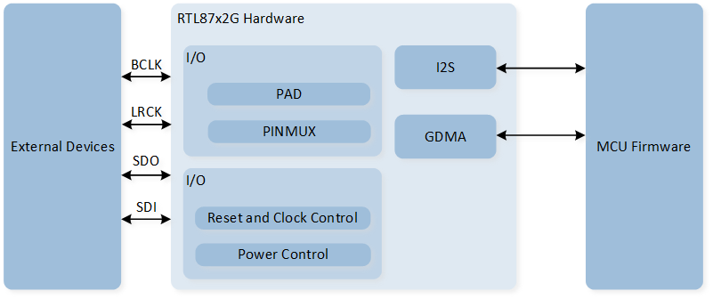
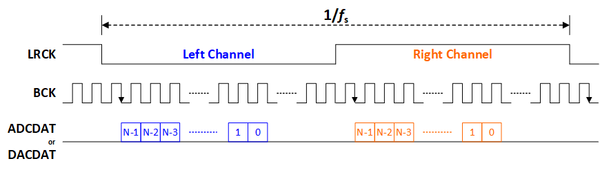
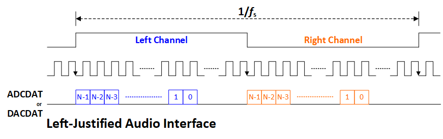
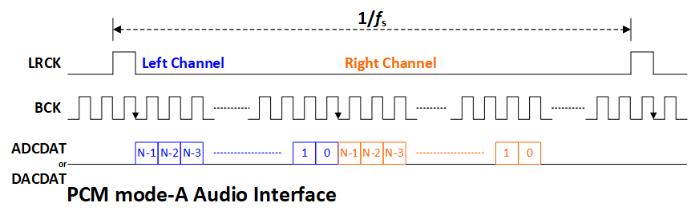
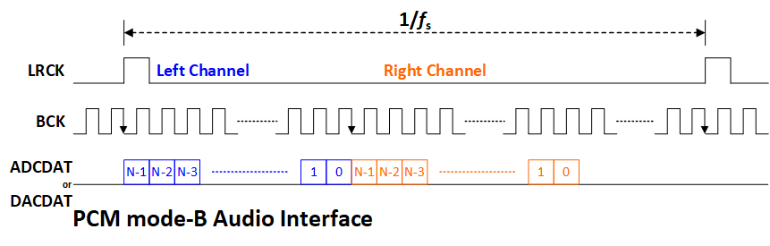

I2S
Sample List
This chapter introduces the details of the I2S sample. The RTL87x2G provides the following examples for the I2S peripheral.
Functional Overview
The I2S interface can support audio protocols like I2S, Left-Justified, PCM, etc. I2S can operate in GDMA mode or FIFO mode. In GDMA mode, set the buffer size according to the amount of transfer data, or directly access the I2S FIFO for data transmission and reception in FIFO mode. It is recommended to automatically transfer audio data via GDMA, as this reduces the number of interrupts and increases efficiency.
Feature List
Block Diagram
Here is the block diagram of I2S. By invoking the MCU Firmware to implement functions such as I2S TX/RX, the hardware achieves data interaction through SDI and SDO, enabling communication with external devices.

System Block Diagram of I2S
Clock Divider
Calculate the fractional divider for BCLK using the formula:
BCLK = XTAL 40MHz * (I2S_BClockNi / I2S_BClockMi).Set the even-bit integer divider for LRCK according to the formula:
LRCK = BCLK / (I2S_BClockDiv + 1).
Where
I2S_BClockDivcan be calculated using the formula:I2S_BClockDiv = (channel width * channel number) - 1.For 2 channels and 32-bit channel width, the recommended clock divider settings are shown below.
BCLK Frequency |
Clock Source |
I2S_BClockNi |
I2S_BClockMi |
I2S_BClockDiv |
Sampling Rate |
0.512 MHz |
XTAL 40MHz |
8 |
625 |
63 |
8 KHz |
0.768 MHz |
XTAL 40MHz |
12 |
625 |
63 |
12 KHz |
1.024 MHz |
XTAL 40MHz |
16 |
625 |
63 |
16 KHz |
1.536 MHz |
XTAL 40MHz |
24 |
625 |
63 |
24 KHz |
2.048 MHz |
XTAL 40MHz |
32 |
625 |
63 |
32 KHz |
3.072 MHz |
XTAL 40MHz |
48 |
625 |
63 |
48 KHz |
6.144 MHz |
XTAL 40MHz |
96 |
625 |
63 |
96 KHz |
12.288 MHz |
XTAL 40MHz |
192 |
625 |
63 |
192 KHz |
2.8224 MHz |
XTAL 40MHz |
441 |
6250 |
63 |
44.1 KHz |
5.6448 MHz |
XTAL 40MHz |
441 |
3125 |
63 |
88.2 KHz |
0.7056 MHz |
XTAL 40MHz |
441 |
25000 |
63 |
11.025 KHz |
1.4112 MHz |
XTAL 40MHz |
441 |
12500 |
63 |
22.05 KHz |
I2S Data Format
The I2S data format includes I2S, Left-Justified, PCM_A, and PCM_B formats and can be set through I2S_InitTypeDef::I2S_TxDataFormat.
The data formats are shown in figures:

I2S Format

I2S Left-Justified Format

I2S PCM_A Format

I2S PCM_B Format